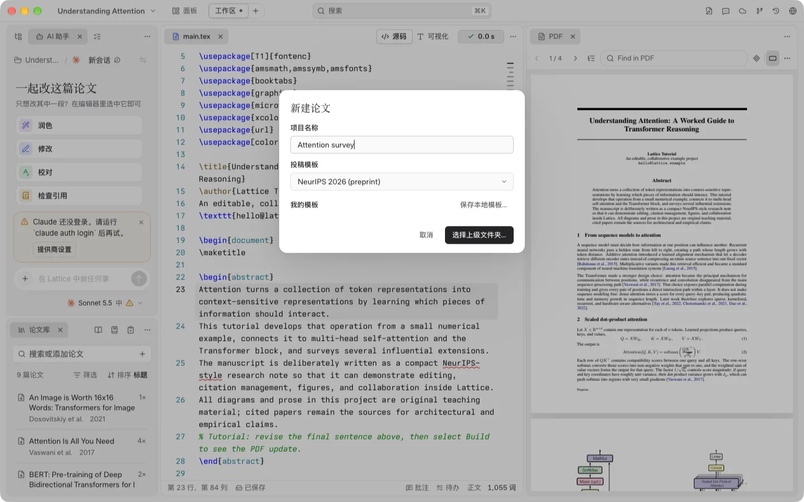
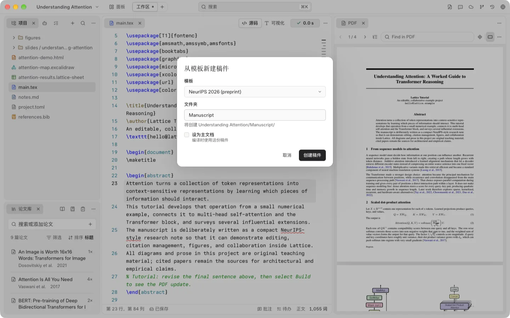
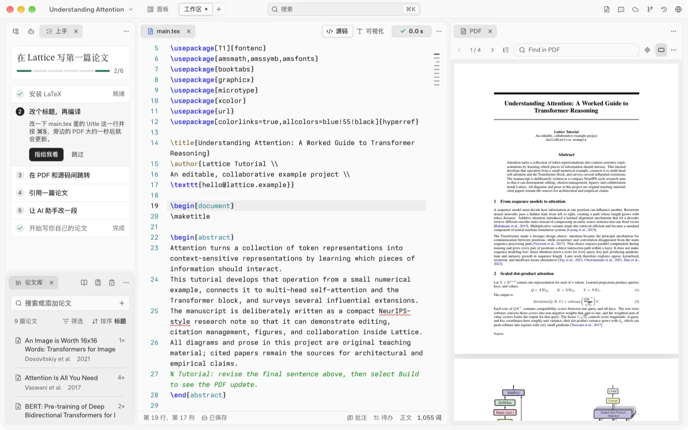

快速上手
安装 Lattice
- 从 最新版本 下载
.dmg，把 Lattice 拖进「应用程序」。Intel Mac 请下载以_x64.dmg结尾的文件。也可以用 Homebrew：brew install --cask lattice。 - 打开 Lattice。它会自动更新：新版本下载好后，Lattice › 重新启动以更新… 即可安装。设置 › 编辑编译 › 更新 显示当前版本，并有 检查更新。
Lattice 需要 macOS 14 或更高版本。Windows 和 Linux 版本仍是实验性的，运行的是经典版本，没有 AI 助手；本指南介绍的是 Mac 版。
原生 Lattice
在 Mac 上，Lattice 就是原生版本：界面由 Mac 直接绘制，而不是网页，Apple 芯片和 Intel 芯片的 Mac 都一样。从 0.20.0 起，它取代了经典版本；Windows 和 Linux 继续使用经典版本。更新经典版本时，会直接把原生版本装在原处，不需要做任何选择；0.20.0 及以后的经典版本一启动就会安装原生版本，下载时会显示一条简短的提示。
- 会带过去的： 最近的项目、设置、主题、插件、项目模板、Agent 技能和 Overleaf 关联。Agent 对话也会带过去：原生版本每次启动 Agent 时，都会加入经典版本里它还没有的对话，并用一条简短的提示说明加入了多少个。项目文件夹本身无论如何都不受影响。
- 如果你切换回去过： 0.19.0 到 0.19.4 可以切换回经典版本。如果你这样做过，原生版本保留它自己的设置，并加入你之后在经典版本里做的事：打开过的项目、改过的设置（原生版本里已有自己取值的设置保持原样，包括它第一次从经典版本带过来的值），以及新增的主题、插件、模板和技能。
- 不一样的地方： 原生版本用 macOS 自带的检查器检查拼写，没有语法检查，也没有其他语言的词典。在 Mac 上无法再回到经典版本；经典版本的数据仍留在你的 Mac 上，原封不动。
配置 TeX
Lattice 使用你自己的 TeX 发行版（MacTeX 或 TeX Live）编译 PDF。如果还没有安装，Lattice 可以帮你安装 BasicTeX：这是「上手」清单的第一步，找不到 TeX 的编译也会提示安装。编译时发现缺少的 LaTeX 宏包，也可以直接在编译问题里安装。Typst 文档完全不需要 TeX，见 Typst 文档。
随时可以打开 设置 › TeX 检查 查看环境。它列出编译用到的每个工具，以及当前项目需要的东西（主文档、参考文献、会议模板宏包和字体）。显示 可以编译了 就说明一切就绪。有红色项时，点 安装所需工具 即可。添加论文和查找引用需要一个小的 Python 工具（uv），同一个按钮也会安装它；「上手」面板里的 安装论文工具 作用相同（约 45 MB）。

打开或新建项目
左上角的项目名菜单和 文件 菜单里有打开和新建项目的各种方式：
- 打开文件夹（
⌘O，文件 › 打开…）：任何包含.tex或.typ文件的文件夹，Lattice 直接在原处编辑。项目菜单里的 在此窗口中打开文件夹 会把它作为当前窗口的一个标签打开。 - 新建项目（
⌘⇧N）：打开 新建论文 对话框。填写项目名，在 投稿模板 中选一个（空白文章、使用 ctexart 的中文文章、NeurIPS、ICML、ICLR、ACL、CVPR 及 CVPR rebuttal、AAAI、IEEE 会议和期刊、ACM、清华大学和中国科大学位论文，或 Blank Typst document），或 我的模板 中你自己保存的模板，再点 选择上级文件夹…。你选的文件夹里会新建项目自己的文件夹，点 创建项目 之前对话框会写明将要创建什么（例如 将创建 ProjectA/Manuscript/）。如果上级文件夹已经和项目同名，它会提醒你，免得建出Manuscript/Manuscript/。 - 克隆仓库…：来自 GitHub 或其他地方的 Git 仓库。
- 从 Overleaf 打开：见 Overleaf 同步。
- 文件 › 导入 Overleaf ZIP…：从 Overleaf 下载的 ZIP 项目。

最近的项目在项目菜单顶部和 文件 › 打开最近使用 中。一个窗口可以在标题栏以标签形式打开多个项目。
一个仓库里放多篇稿件
项目就是一个文件夹，所以它可以是整个代码仓库：分析代码、数据和一篇或几篇论文放在一起。把仓库根目录作为项目打开，Agent 就能在整个仓库里工作，比如先拿 analysis/ 的输出核对结果部分的一个数字，再在同一个对话里修改论文。
每篇论文都可以用 从模板新建稿件… 开始。它在文件夹的右键菜单、项目面板空白处的右键菜单、面板的 + 菜单和命令面板（⌘K）里。选一个 模板（和新建项目里的一样，也包括你保存的模板）和 文件夹（默认是 Manuscript），需要的话勾上 设为主文档，这样 编译 会编译它。点 创建稿件，Lattice 把模板文件写进这个文件夹并打开主文件。当前项目保持打开，设置、历史和 Agent 对话都不变，也不会另建项目。如果其中有文件已经存在，就什么也不写，对话框会列出这些文件。

「上手」清单
项目菜单中的 新手教程 会打开一篇示例论文，旁边是 上手 清单，共六步：安装 LaTeX、修改标题并编译、在 PDF 和源码之间跳转、引用一篇论文、让 AI 助手修改一段话、开始写你自己的论文。每一步都有 指给我看，自己完成的步骤会自动打勾。之后想重新打开清单，在命令面板（⌘K）里运行 显示上手。
